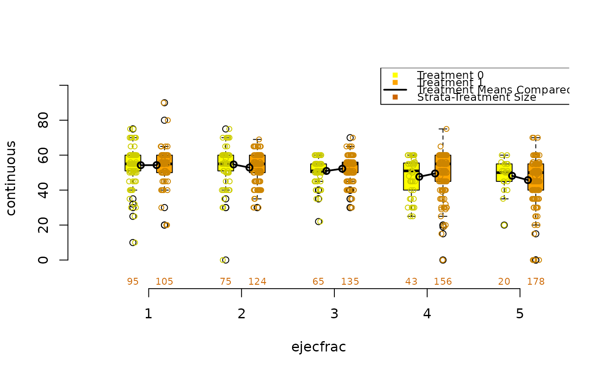
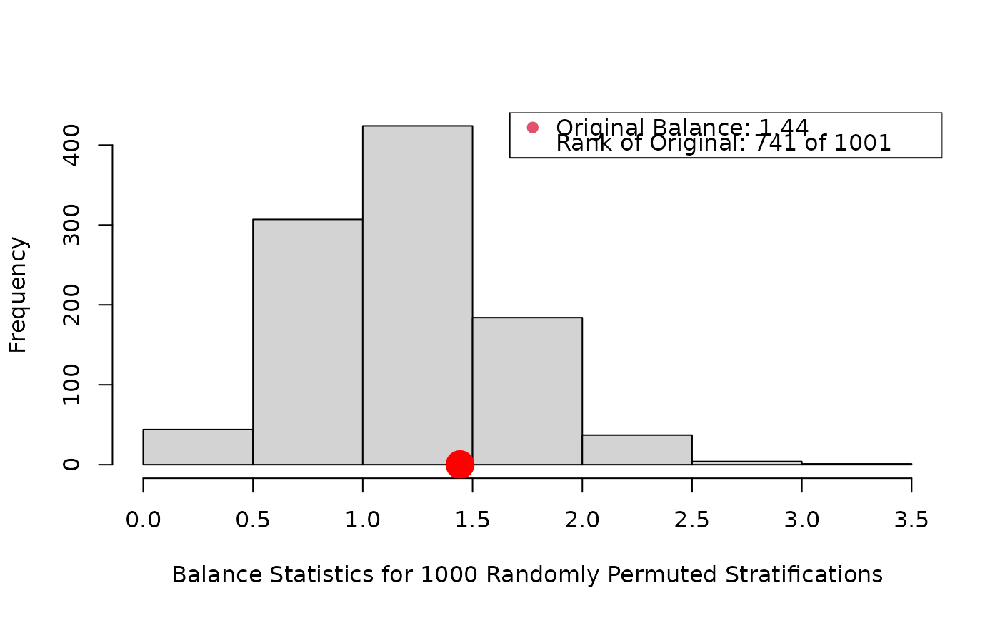

R/box.psa.R
box.psa.RdGiven predefined strata and two level treatment for a continuous covariate
from a propensity score analysis, box.psa draws pairs of side by side
boxplots corresponding to control and treatment for each stratum.
box.psa(
continuous,
treatment = NULL,
strata = NULL,
boxwex = 0.17,
offset = 0.17,
col = c("yellow", "orange", "black", "red", "darkorange3"),
xlab = "Stratum",
legend.xy = NULL,
legend.labels = NULL,
pts = TRUE,
balance = FALSE,
trim = 0,
B = 1000,
...
)Vector or N X 3 dataframe or matrix. If a vector, then
represents the quantitative covariate that is being balanced within strata
in a PSA. If continuous has three columns, then the second and third
are assumed to be the treatment and strata respectively.
Missing values are not allowed.
Binary vector of same length as continuous
representing the two treatments; can be a character vector or factor.
A vector or factor of same length as continuous
indicating the derived strata from estimated propensity scores. May be
numeric or character vector, or factor. Strata are ordered lexicographically
in plot.
Numeric; controls width of boxes. Default = 0.17
Numeric; controls distance between the two boxes in each stratum. Default = 0.17
Default = c("yellow", "orange", "black", "red",
"darkorange3"). Color vector for the control boxes, treatment boxes, and
line connecting their means.
Label for the x-axis; default = "Stratum". Other
standard labels may be used as well.
Binary vector giving coordinates of the legend. By default the legend is placed to the top left.
Vector of labels for the legend; default is essentially
c("Treatment (first)", "Treatment (second)", "Treatment Means
Compared", "KS p-values", "Strata-Treatment Size") where treatment names
are taken from treatment. Vector has four elements if balance
= FALSE, ommitting "KS p-values".
Logical; if TRUE then (jittered) points are added on top
of the boxplots.
Logical; if TRUE then bal.ms.psa provides a
histogram of a permutation distribution and reference statstic to assess
balance across strata; bal.ks.psa adds p-values to the graph derived
from 2-sample Kologmorov-Smirnov tests of equivalence of control/treatment
distributions within each stratum.
If balance=TRUE, defines fraction (0 to 0.5) of
observations to be trimmed from each end of stratum-treatment level before
the mean is computed. See mean, bal.ms.psa.
Passed to bal.ms.psa if necessary, determines number of
randomly generated comparison statistics. Default =1000.
Other graphical parameters passed to boxplot.
Draws a pair of side by side boxplots for each stratum of a propensity score analysis. This allows visual comparisons within strata of the distribution of the given continuous covariate, and comparisons between strata as well. The number of observations in each boxplot are given below each box, and the means of paired treatment and control groups are connected.
bal.ks.psa, bal.ms.psa, cat.psa
continuous<-rnorm(1000)
treatment<-sample(c(0,1),1000,replace=TRUE)
strata<-sample(5,1000,replace=TRUE)
box.psa(continuous, treatment, strata)
#> Warning: NAs introduced by coercion
#> Warning: NAs introduced by coercion
data(lindner)
attach(lindner)
lindner.ps <- glm(abcix ~ stent + height + female +
diabetic + acutemi + ejecfrac + ves1proc,
data = lindner, family = binomial)
ps<-lindner.ps$fitted
lindner.s5 <- as.numeric(cut(ps, quantile(ps, seq(0, 1, 1/5)),
include.lowest = TRUE, labels = FALSE))
box.psa(ejecfrac, abcix, lindner.s5, xlab = "ejecfrac",
legend.xy = c(3.5,110))
#> Warning: NAs introduced by coercion
#> Warning: NAs introduced by coercion

lindner.s10 <- as.numeric(cut(ps, quantile(ps, seq(0, 1, 1/5)),
include.lowest = TRUE, labels = FALSE))
box.psa(height, abcix, lindner.s10, xlab="height",
boxwex = .15, offset = .15, legend.xy = c(2,130), balance = TRUE)

#> Press <enter> for bar chart...
#> Warning: NAs introduced by coercion
#> Warning: NAs introduced by coercion